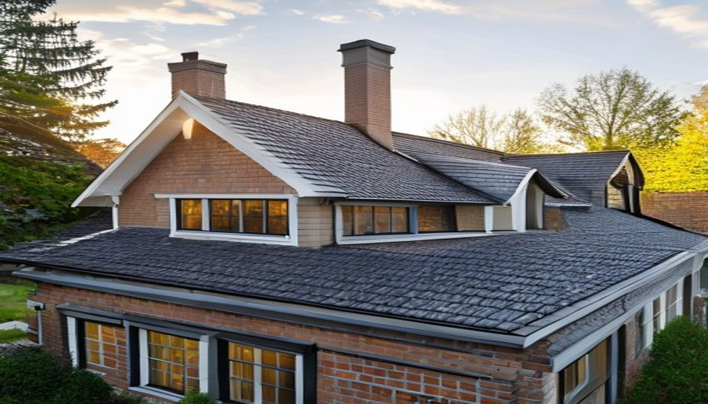
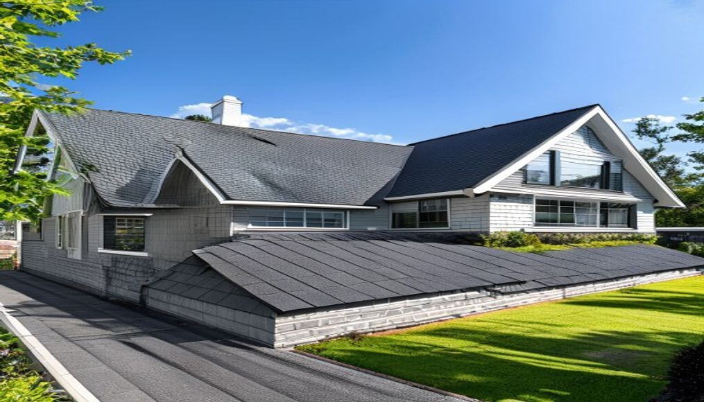
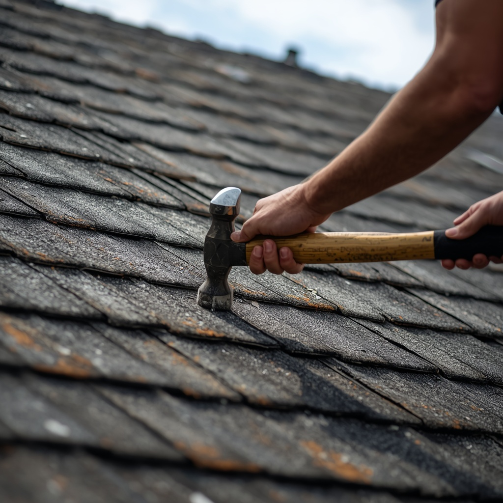
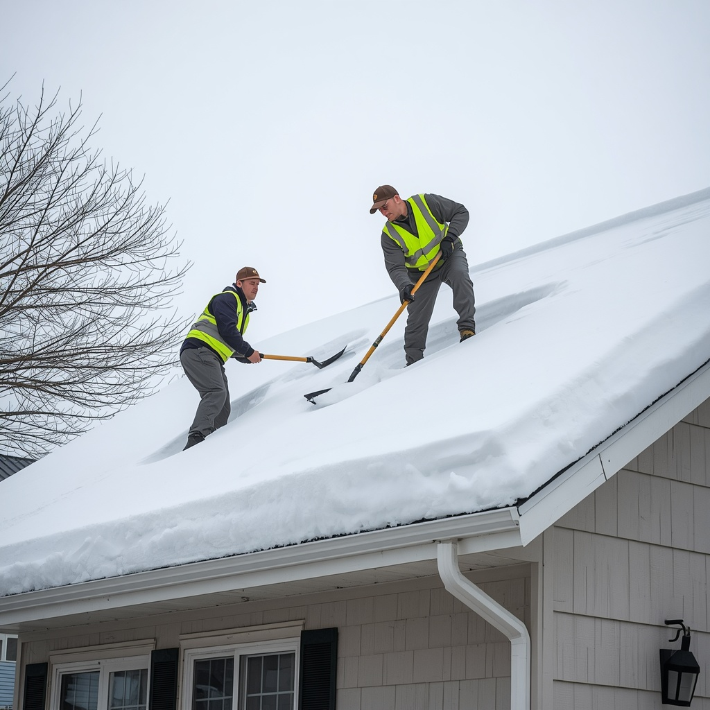

Nos Services de Toiture
Des solutions complètes et durables pour tous vos besoins, adaptées au climat québécois.
Réfection de toiture
Nous redonnons vie à votre toiture grâce à une réfection complète et durable. Nos experts s'assurent que chaque détail est pris en charge pour protéger votre maison contre les intempéries québécoises. Du retrait de l'ancien revêtement jusqu'à la pose des bardeaux neufs, nous gérons chaque étape avec rigueur.
Ce qui est inclus
- Retrait complet de l'ancien bardeau
- Inspection et réparation de la charpente si nécessaire
- Installation de la membrane d'étanchéité
- Pose des bardeaux d'asphalte de qualité (BP, GAF ou IKO)
- Nettoyage complet du chantier
Combien coûte une réfection de toiture dans les Laurentides ?
Combien de temps dure une réfection complète ?
Quelle garantie offrez-vous sur une réfection ?

Toiture neuve — Résidentiel & Commercial
Pour les nouvelles constructions résidentielles et commerciales, Groupe Mtech assure une installation solide et esthétique adaptée à vos plans et à vos besoins. Nous collaborons avec vos entrepreneurs généraux et respectons les échéanciers de chantier.
- Résidentiel unifamilial et multilogement
- Bâtiments commerciaux et institutionnels
- Choix de matériaux adaptés au budget et au projet
- Coordination avec l'entrepreneur général
Quel type de bardeaux recommandez-vous pour le climat québécois ?
Intervenez-vous sur les bâtiments commerciaux ?

Réparation de toiture
Une infiltration d'eau, des bardeaux soulevés ou manquants ? Notre équipe intervient rapidement pour diagnostiquer et corriger le problème avant qu'il ne s'aggrave. Une réparation rapide peut vous éviter des coûts importants de rénovation intérieure.
- Diagnostic précis de l'infiltration
- Remplacement de bardeaux endommagés
- Réfection des solin et des noues
- Réparation autour des lucarnes, cheminées et évents
- Calfeutrage et scellant de haute qualité
Comment savoir si ma toiture a besoin d'une réparation ?
Intervenez-vous en hiver ?

Inspection de toiture
Détectez les problèmes avant qu'ils ne deviennent coûteux. Notre service d'inspection professionnel fournit un rapport complet sur l'état de votre toiture : durée de vie estimée, zones à risque et recommandations. Idéal avant l'achat d'une propriété ou pour une maintenance préventive.
- Vérification complète de la couverture
- Inspection des solin, évents, cheminées et lucarnes
- Évaluation de la ventilation de la toiture
- Rapport avec photos et recommandations
À quelle fréquence devrait-on faire inspecter sa toiture ?
L'inspection est-elle incluse dans la soumission ?
Déneigement de toiture
Les hivers québécois peuvent soumettre votre toiture à des charges de neige considérables. Notre équipe assure un déneigement sécuritaire pour prévenir les dommages structuraux, les infiltrations d'eau de fonte et les accumulations de glace dans les gouttières.
- Déneigement sécuritaire avec équipements adaptés
- Retrait des barrages de glace (ice dams)
- Protection de la couverture contre les outils abrasifs
- Intervention résidentielle et commerciale
Quand faut-il faire déneiger sa toiture ?

Urgence Toiture 24/7
En cas de fuite soudaine, de dommages causés par une tempête ou de tout autre situation urgente, notre équipe est disponible rapidement pour intervenir et protéger votre maison ou votre commerce — peu importe l'heure.
- Disponible 7 jours sur 7, jour et nuit
- Bâchage d'urgence pour protéger l'intérieur
- Réparation temporaire ou permanente selon le cas
- Résidentiel et commercial
Pas sûr du service dont vous avez besoin ?
Contactez-nous — nous évaluons votre situation et vous guidons vers la meilleure solution.
Obtenir ma soumission gratuite